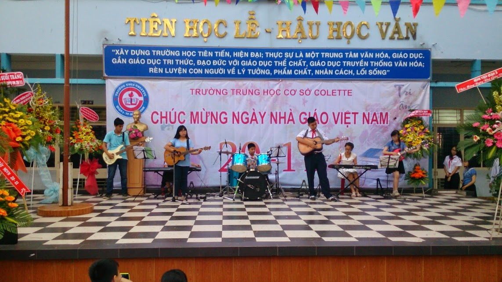
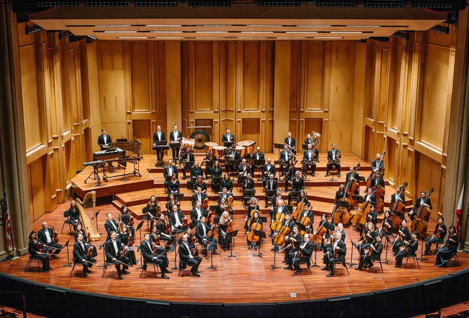

Tiết 33: SƠ LƯỢC MỘT VÀI THỂ LOẠI NHẠC ĐÀN
Nhạc đàn là gì?
Ban nhạc "801" học sinh Colette (20/11/2014)
_ Nhạc đàn (nhạc không lời, khí nhạc, nhạc khí) là thể loại trình diễn nghệ thuật bằng nhạc cụ không có người hát với số người biểu diễn từ một cho đến vài chục thậm chí hằng trăm tuỳ vào quy mô biểu diễn.
_ Nhạc đàn đòi hỏi người biểu diễn phải thuần thục việc điều khiển, sử dụng nhạc cụ của mình. Một bài nhạc đàn được biểu diễn bằng nhiều nhạc cụ sẽ càng phức tạp hơn như việc hát bè ở hợp xướng. Trong thực tế, độc tấu (một người chơi hay còn gọi là solo) là hình thức nhạc đàn phổ biến nhiều nhất hiện nay. Nhạc đàn ngoài việc biểu diễn các bản nhạc không lời còn chiếm vai trò quan trọng đệm cho người hát.
_ Nhạc cụ được độc tấu nhiều nhất hiện nay: piano, organ, guitar, harmonica, sáo. Các nhạc cụ khác như: trống, bass, các loại kèn, violin... thì thường cần sự phối hợp với các loại nhạc cụ khác để hiệu quả hơn với người nghe. Việc sử dụng nhiều nhạc cụ với nhau (từ 2 người chơi trở lên) gọi là hoà tấu. Các tác phẩm hoà tấu chúng ta có thể thấy qua dàn nhạc giao hưởng (symphony), các ban nhạc biểu diễn.
_ Âm nhạc truyển thống cũng có những tác phẩm nhạc không lời như Lưu thuỷ, Hành vân, Kim tiền, Cổ bản...
Dàn nhạc giao hưởng
Link các bài hoà tấu:
Lưu Thuỷ Kim Tiền - Xuân Phong Long HổPirates of the Caribbean